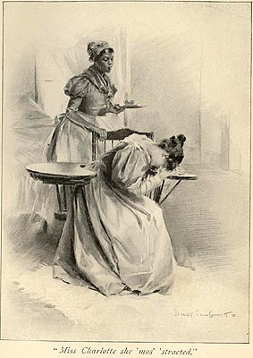

Like "Mars Chan"'s and "Miss Anne"'s love story, "Marse George" and "Miss Charlotte"'s is a tragedy. Here we see Charlotte's grief at George's death. Her maid's name is Nancy.
Page,
In Ole Virginia
(1896)
The Barrett Collection, UVA PS 2514 .I6 1896